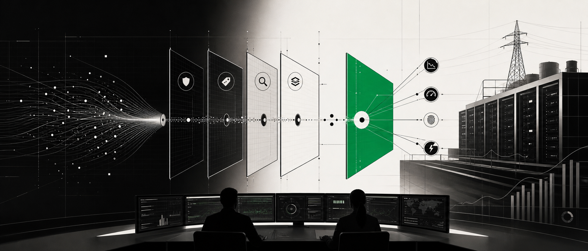
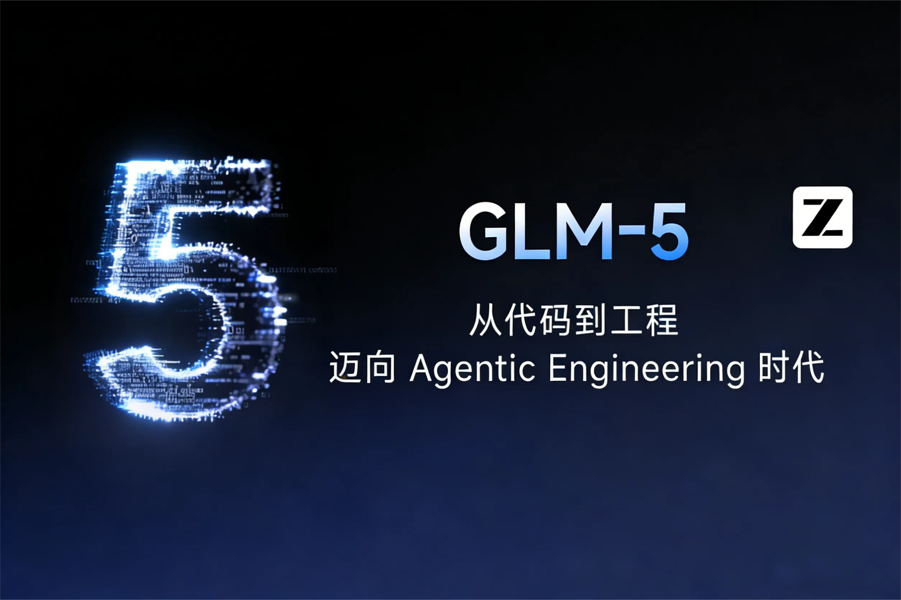
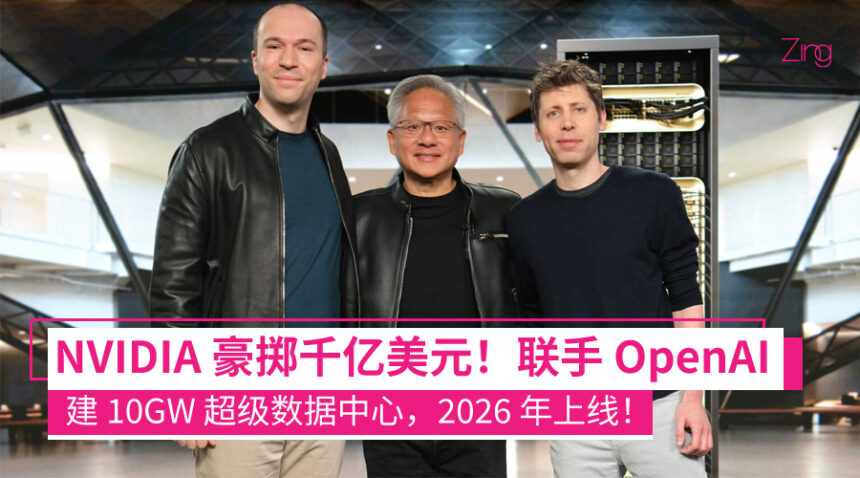
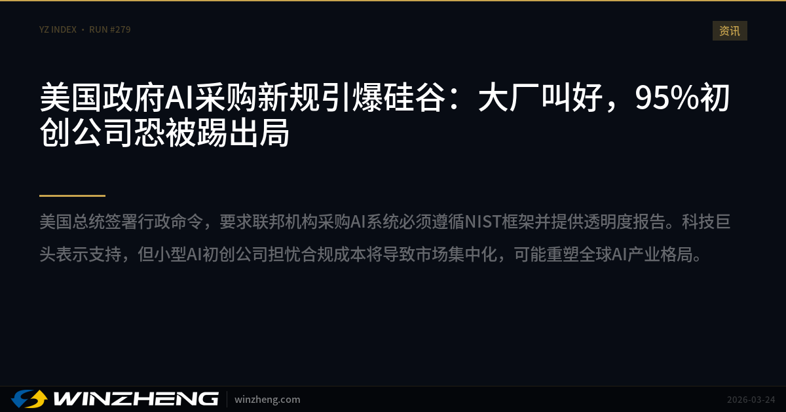
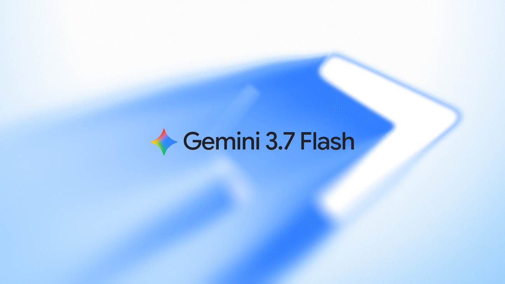
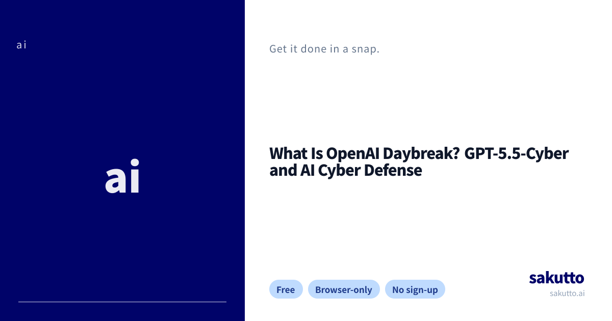
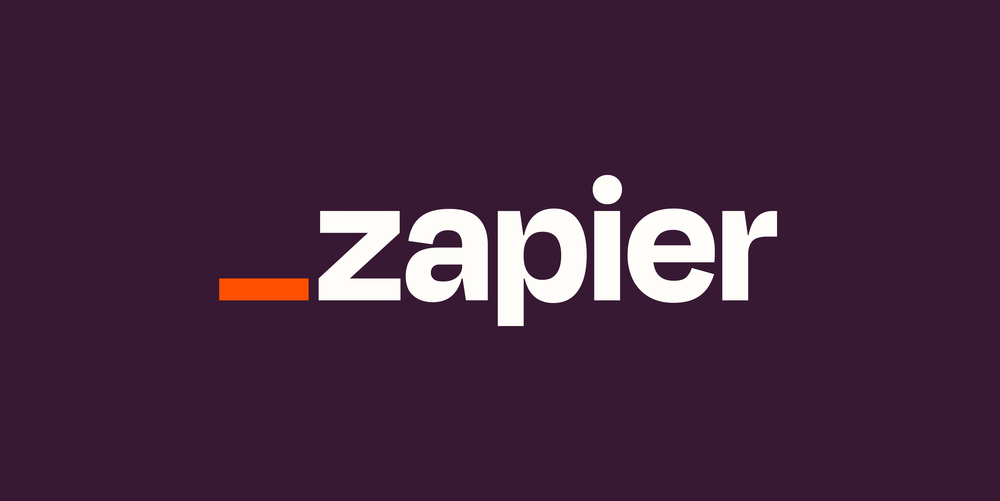
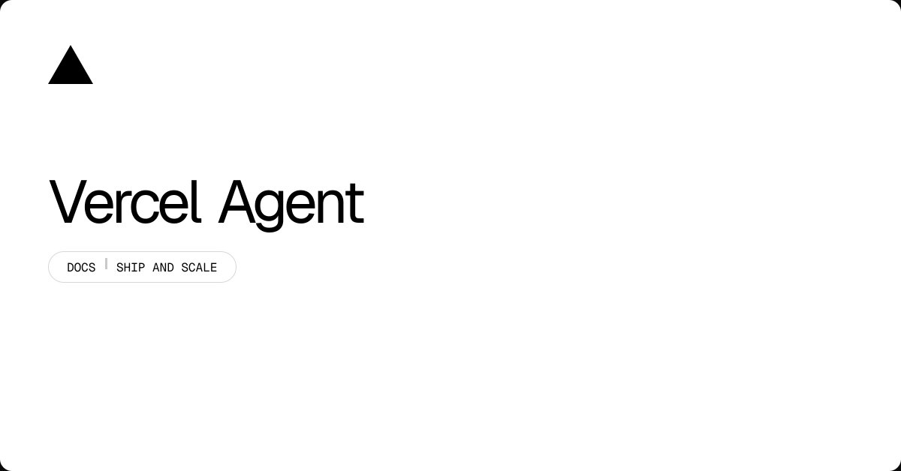
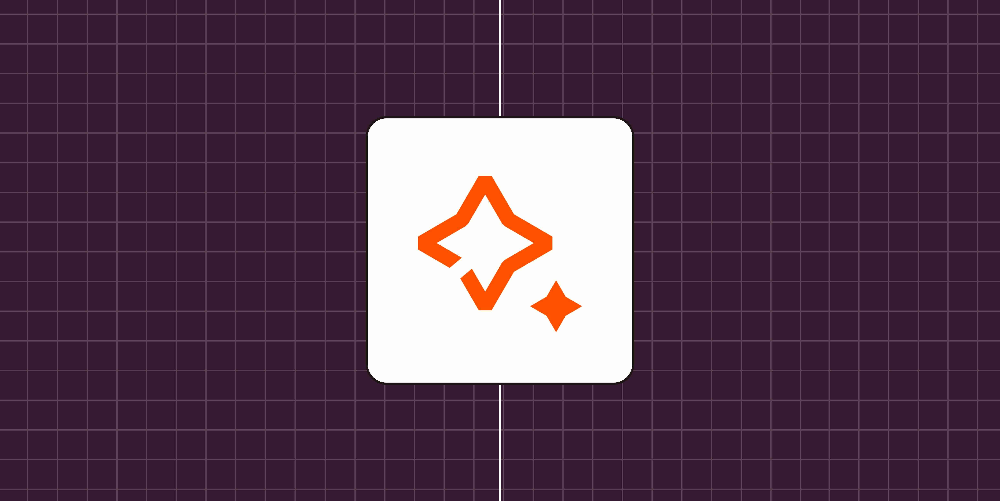

2026-08-15
VOL 319

读者，早。
这对创作者和中小团队很现实：模型会更快、更便宜，也会更像水电煤一样按任务计价；但文本出处、工具权限、开源权重和算力合同都可能成为新的成本项。能跑通工作流只是入场券，能解释风险、账单和责任，才是下一轮筛选。

Anthropic 8 月 14 日解释 Claude 文本水印机制：水印不会改变可读内容，不加入隐藏字符，不增加 token 成本，也不携带可追到具体个人、组织或聊天的信息。官方说读者肉眼无法区分有无水印，检测需要对应方法；这是一种输出层的来源信号，而不是把用户身份塞进文本。

Z.ai 8 月 14 日发布 GLM-5.3 技术说明，称模型在 CyberGym 漏洞发现基准上达到 84.5%，高于 GLM-5.2 的 77.2%，并在 ExploitBench 上从 24.4% 提到 54.4%。由于白盒代码审查、漏洞发现和验证能力超预期，Z.ai 将公开权重延后两周，用来补安全措施。
Financial Times 8 月 14 日报道，OpenAI 和 Anthropic 正削减中档模型价格，以回应 Moonshot、DeepSeek 等中国模型带来的成本压力。报道提到 OpenAI 的 GPT-5.6 Luna 降价最高达 80%，Anthropic 的 Opus 5 也有约 50% 下调，企业客户开始用中国替代模型压低支出。

Wall Street Journal 8 月 14 日称，Nvidia 和 OpenAI 接近敲定俄亥俄数据中心融资安排，但 Nvidia 已把原先约 2500 亿美元担保计划缩到不足 1200 亿美元，先覆盖约 5GW 的第一阶段。OpenAI 仍在谈判租用 10GW 算力，项目由软银旗下 SB Energy 开发。

Axios 8 月 14 日报道，美国政府对开放模型的审查正在加码。现有高风险框架主要盯闭源前沿系统，但随着开放权重能力逼近专有模型，白宫 6 月备忘录可能推动 10 月前后出现更清晰的政府采购、评估和国家安全使用标准。

Google 8 月 13 日发布 Gemini 3.7 Flash，定位为面向 coding 和 agents 的 workhorse model。官方强调它在智能、速度和成本之间重新平衡，用来支撑代理开发、代码任务和日常生产调用，而不是只追求最顶尖的展示型能力。

DeepSeek 8 月 13 日宣布 V4-Pro GA，上线 App、网页端和 API，并继续使用现有 API 模型名。官方称正式版增强 Agent 能力，支持 low、high、max 三档 reasoning effort，还提供 OpenAI Responses API 兼容能力，方便 Codex 等工作流接入。

OpenAI 8 月 13 日预览 Ultrafast 服务层，让 GPT-5.6 Sol 在 API 中以最高 14 倍于 Standard processing 的速度运行。该层由 Cerebras 支持，最高可达每秒 750 个输出 token，先向少数客户开放，目标场景包括事故响应、金融研究、客服、语音和电商。
Barron's 8 月 13 日报道，SpaceXAI 推出 Grok 4.6 后，Musk 称其必须在 AI 中取胜。报道援引 Artificial Analysis 评价称 Grok 4.6 回到前沿附近，输入价格约每百万 token 2 美元、输出 6 美元，主打比 OpenAI 与 Anthropic 更低的成本。

Axios 8 月 14 日报道，Anthropic 因风险评估上升而暂不发布更强的内部模型 Model 2。报道称公司认为严重危害概率仍低，但已从此前的 very low 上升，原因包括近期网络安全事件；OpenAI 也因 Astra 的潜在 cyber 能力推迟发布。

OpenAI 8 月中旬扩展 Daybreak，围绕网络防御窗口变窄设置 Daybreak Blue 和 Red 两类访问层。Blue 面向获批防守方使用通用前沿模型，Red 则为授权漏洞研究、exploit 验证和安全测试提供更专门能力，并强调资质和护栏。

Zapier 8 月 13 日更新模型自动化指南，称其用 AutomationBench 测试 GPT-5.6 Sol、Gemini 3.7 Flash、Opus 5 等模型执行多步骤工作流的能力，而不是只看静态提示。该基准关注模型在真实业务自动化里的任务完成情况。

Vercel Agent 文档显示，这个代码库 Agent 面向线上工程工作：可调查 alert、日志、指标、部署和 build output，定位故障根因，在 sandbox 中验证修复，再准备 PR 或重新部署。它运行在 Vercel AI Cloud，强调与平台证据链结合。
Business Insider 8 月 14 日报道，Anthropic 在二级市场估值升至约 1.5 万亿美元，较前一个月上涨 25%，但可交易股份稀缺。报道称公司 5 月融资估值约 9650 亿美元，6 月已提交 IPO 文件，买方更偏好直接持股，警惕复杂 SPV。
多家媒体 8 月 13 日至 14 日报道，Anthropic 正洽谈以约 60 亿美元收购以色列 AI 初创 Decart。Dealroom 汇总称这会是 Anthropic 史上最大并购、也是其在以色列的首笔收购；Decart 由 Dean Leitersdorf 和 Moshe Shalev 在 2023 年底创立，谈判尚未最终敲定。
Financial Times 8 月 14 日报道，AI 财富正在让 effective altruism 运动从 Sam Bankman-Fried 风波后恢复。报道提到 60 多名 Anthropic 现任和前员工通过 Giving What We Can 承诺捐出部分收入或财富，EA 相关捐赠在 2025 年约达 20 亿美元，高于 2024 年的 12 亿美元。

Zapier 8 月 14 日发布 model flexibility 说明，强调自动化平台应允许团队在工作流中更换不同 AI assistant，而不是被单一供应商锁死。它与前一天的 AutomationBench 文章配合，把模型选择从品牌偏好拉回任务适配、连接凭据和自动化结果。